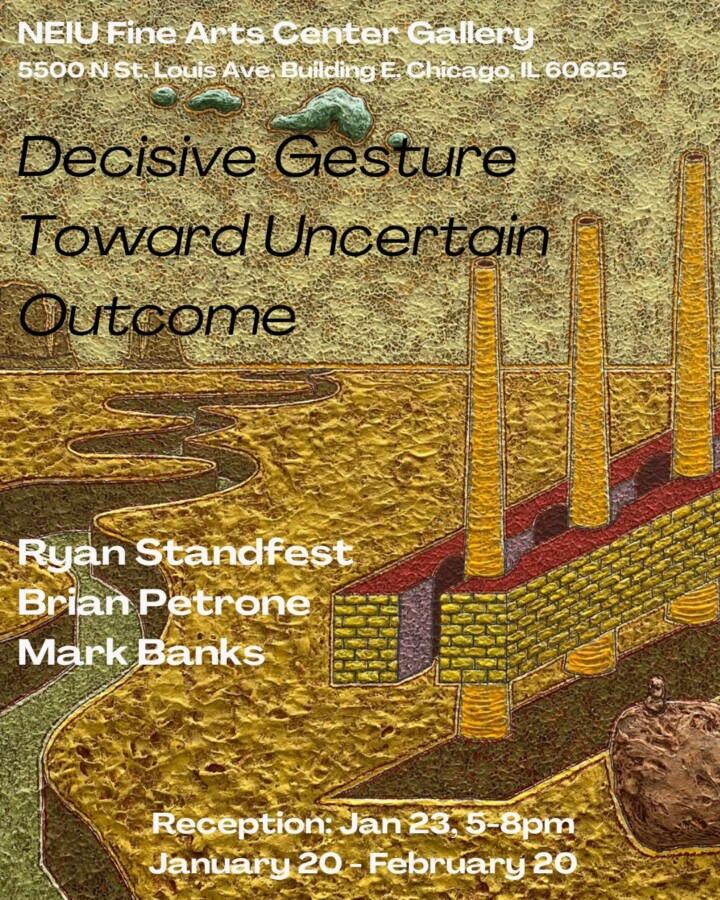

Decisive Gesture Towards Uncertain Outcome
Decisive Gesture Towards Uncertain Outcomes pairs the work of Mark Banks, Brian Petrone and Ryan Standfest who each address infrastructure, the built landscape and its failings. Standfest’s paintings, drawings and prints approach these shadows of industry as unheroic; highlighting vulnerability and uncertainty rather than the ideal and monumental. Standfest’s work uses humor and the absurd to build a visual language in quiet conflict. In Of Phantom Appendages and Other Romantic Longings n.1 & 2 both structures and figures are bisected into disfunction, creating amputees of both the worker and the system.
Bank’s series of oil paintings In the Fields of Rotting Giants address the ruins of industrial sites along the southern tip of Lake Michigan that have permanently scarred the landscape to the molecular level. Several of Bank’s paintings address details of these spaces that serve as portraits of a larger system of extraction, pollution, and exploitation. In Study of Steel, he uses corrosion as a means of image making, which simultaneously will slowly break down his subject matter. Brian Petrone, an architect by trade, employs building materials to create sculptural work that references both the built world and environment that it impacts. His small scale works in Decisive Gestures Towards Uncertain Outcomes approach bricks and limestone with a collaborative reverence and create vignettes that consider larger scale implications with titles referencing Tectonics and Icebergs.